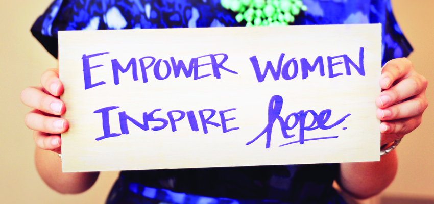
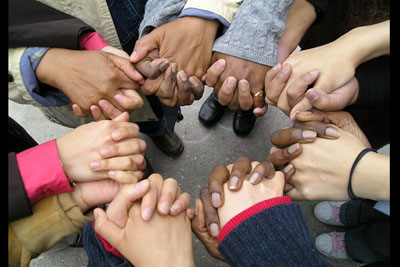
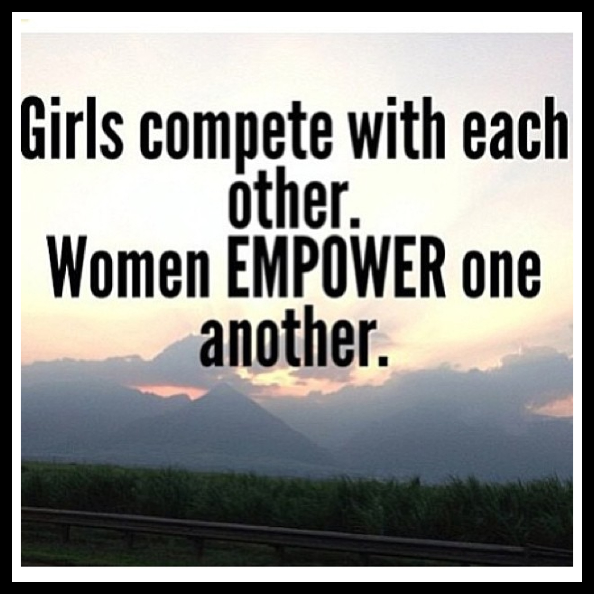

Overview
India is a mystical land with incredible cultural values and heritage. In this great nation, we worship our almighty in the form of mighty gods and goddesses . So, it's a must to think about the well-being of Indian women. Are they being given the respect and the stature they should get? A question which tends to get a lot of curiosity.
To speak directly, the topic of women empowerment is one of the intense and polarising arguments in our nation. It is a fact that many talks and seminars are organised on this topic all over the nation, but is there a change taking place in the country, or in the mentality of the public mass. The answer is NO. Many people would opine about the change in mindset of the people of this nation, but the question that we need to ask is: “How exactly can this be brought about?" “How will the public change its mindset which has been hereditarily passed over the ages? ”And it is India, we are talking about where being orthodox and conservative is equivalent to having a high rank in the society. Being educated is never a solution for all these problems because there are many instances where highly educated people indulge in activities strictly against women. In India, women are confined and isolated to a certain region of interest & have to contend with certain restrictions. So it is very difficult to change the thoughts and notions of the people if they do not believe in themselves and do not do what their conscience tells them to do.
A good question at this point is: “Why are reservations there for women, if we support women equality and women capacity building? Because this itself propagates the idea that women are less powerful and less diligent. Should we not give them a chance to build themselves to be strong enough and to be efficient?” Some things are hard to change such as the laws and constitution of a nation. There are far better solutions than having reservations. We can help women in building their own self respect. Giving privileges is the most inaccurate way of defining empowerment. It makes them carefree, the level of accomplishment decreases. Women are not powerless, they are always powerful. They are the reason for life and mankind. They should not be portrayed in a negative way, or taken for granted. It is humanity to respect others, so we must respect women. Some people indulge themselves in honor killings and all, submerged in their bigotic beliefs and arrogance. They camouflage themselves from others by showing that they do all this to respect women. They just depict that love is a henious crime whose solution is death. But there are many people who think in a positive way. Who said love is a crime? But these wicked and freaks, they think that what they do is right. No one is there to stop them. Because they are powerful by money and threat, but weaker by thoughts I would say.

Girls are eve-teased, beaten publicly, kidnapped publicly etc, but you know what, public of India is a silent spectator chasing after money. No one takes a step forward and even if someone does, no one supports it. The real fact is that no one wants to get in this stuff due to the legal problems they may face and ofcourse the police. Police are not meant to be afraid of, they are meant to be respected. But due to some anti-social cops, honest cops also get a bad image. So India needs a lot of changes which can only be brought about by unity and transparency. But the orthodox beliefs and notions are the barriers for this type of thinking and creation of such progressive circumstances and beliefs.
Literally, everything in India is just dependent on one thought “LOG KYA SOCHENGE”. It is the only thought which plays on everyone’s conscience. Even if a person realises the right path, he gets deviated from his own decisions. Women are the most precious human beings and the symbols of beauty. Their sacrifices for mankind are always ignored. They play a diverse role in their lifetime and manage everything in a great way. But let us have a look at another side of the coin, everytime women are not the innocent ones, sometimes they also commit a lot of grave mistakes and create a lot of negativity which triggers a lot of pain in many people. As the saying goes:
“A WOMAN CAN CREATE HEAVEN AND ALSO HELL.”
My Views
So, mistakes happen but that doesn’t mean we forget how to respect women in our lives. And it is a request to all human beings who always take the wrong stance on these things. Stop the honor killings because love is not a crime. If you can’t understand it then better acccept that you are not a human being and also deprived of values of life. Stop the domestic violence because women are not to be treated as puppets of anyone. Money or dowry is not the solution of everything, neither it makes you a better human nor a billionare. It just breaks down your conscience. Every bride is a daughter, so love them and care for them. In return they might also love and care for you. And the most important, stop the rapes and sex trafficking, women are not always objects of sexual pleasure for everyone. God has created everyone equally, so respect every women you see, save every female you see in trouble. Do not cheat women because they trust you, because breaking someone’s trust is a sin. So please, it's an appeal to every person, respect the women. Give respect and get respect. Nothing can change in India,and my 1000 words shall not change it instantaneously . Something will change, if people begin to understand each other’s pain by keeping themselves in another person’s circumstances. Love every human being, what is there to lose, they might love you and care for you in return. I will conclude by saying only two words I have always admired “LOVE ALL.”